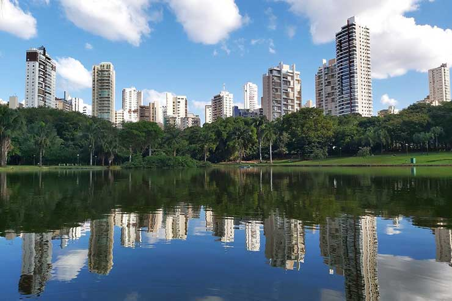

Goiás é um estado localizado na região Centro-Oeste do Brasil, com uma população de aproximadamente 7 milhões de habitantes até 2023. É conhecido por sua rica cultura, história e belezas naturais. Entre os principais pontos turísticos estão a cidade de Pirenópolis, famosa por suas festas tradicionais e arquitetura colonial, o Parque Nacional da Chapada dos Veadeiros, com suas paisagens deslumbrantes de cachoeiras e formações rochosas, e a cidade de Goiás, patrimônio histórico com suas ruas de pedra e igrejas antigas. O governador atual de Goiás, até outubro de 2023, é Ronaldo Caiado.
